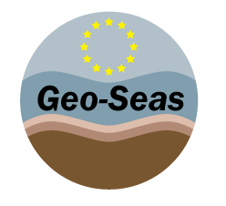

Ends&Bends version ${project.version}
Developped for IFREMER / SISMER, by ALTRAN.
From the original application "Ends & Bends" v 1.1,
24/12/2002, NLfB and GGA - Hannover.
This software has received funding from the European Union Seventh Framework Programme (FP7/2007-2013)
under grant agreement n°283607, SeaDataNet II and n°238952, Geo-Seas.

ENDS & BENDS LICENSE AGREEMENT
GNU Lesser General Public License v3.0 (LGPL-3.0)
EndsAndBends is free software: you can redistribute it and/or modify it under the terms of the GNU Lesser General Public License as published by the Free Software Foundation, either version 3 of the License, or (at your option) any later version.
This program is distributed in the hope that it will be useful, but WITHOUT ANY WARRANTY; without even the implied warranty of MERCHANTABILITY or FITNESS FOR A PARTICULAR PURPOSE. See the GNU Lesser General Public License for more details.
You should have received a copy of the GNU Lesser General Public License along with this program (see LICENSE.txt). If not, see https://www.gnu.org/licenses/.
© 2006-${current.year}, IFREMER - SeaDataNet
Contact: sdn-userdesk@seadatanet.org